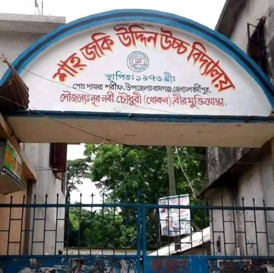

মাধ্যেমিক স্কুল পরিচিতি

শাহ্ জকি উদ্দিন উচ্চ বিদ্যালয়, ডাকঘর-দায়েরা শরীফ, উপজেলা-রামগঞ্জ, জেলা-লক্ষ্মীপুর জিন্দাপীর সৈয়দ শাহজকি উদ্দিন হোসাইনী (রঃ) এর নামে ০১-০১-১৯৭৬খ্রিঃ প্রতিষ্ঠিত হয়। লক্ষ্মীপুর জেলার রামগঞ্জ উপজেলার ইতিহাস প্রসিদ্ধ শ্যামপুর গ্রামে বিদ্যালয়টির অবস্থান। রামগঞ্জ উপজেলা শহর থেকে দক্ষিণ- পূর্ব দিকে প্রায় ৮ কি.মি. দূরে এটি অবস্থিত। বিদ্যালয়টি প্রতিষ্ঠার পিছনে সবচেয়ে বেশি ভূমিকা এলাকার শ্রদ্ধেয় প্রজ্ঞাবান, বিত্তবান, শিক্ষানুরাগী সমাজ সেবক, যারা স্বাধীনতার পর থেকে হযরত শাহ্ জকির পূণ্যভূমি শ্যামপুর গ্রামে অত্র শিক্ষা প্রতিষ্ঠান গড়ার প্রত্যয় নিয়েছিলেন। অত্র বিদ্যালয়ের শিক্ষাদান পদ্ধতি, শিক্ষকগণের মেধা, নিরলস পরিশ্রম, প্রাণবন্ত উদ্যম, পরিচালনা পর্ষদের কার্যকরি পদক্ষেপ, এলাকাবাসীর শ্রম, অর্থ এবং মেধার সমন্বয়ে প্রতিষ্ঠানটি ধারাবাহিকভাবে সাফল্যের শীর্ষে অবস্থান করেছে।
জিন্দাপীর সৈয়দ শাহ্ জকি উদ্দিন হোসাইনী (রঃ) এর সুযোগ্য উত্তরসূরী সৈয়দা আঞ্জিরের নেছা এবং সৈয়দ গোলাম রাব্বানীর ভূমি দানের মাধ্যমে আনুষ্ঠানিকভাবে ০১-০১-১৯৭৬খ্রিঃ জুনিয়র হাইস্কুল হিসেবে বিদ্যালয়টি প্রতিষ্ঠিত হয়। বিদ্যালয়ের প্রতিষ্ঠাতা প্রধান শিক্ষক জনাব, কাজী শামছুল আলম বি.এসসি, বি.এড ১৯৮০ সালে যোগদানের পর পর্যায়ক্রমে এটি হাই স্কুল হিসেবে উন্নীত হয়। ১৯৮৩ সালে অত্র বিদ্যালয়ের ছাত্র-ছাত্রীরা প্রথম এস.এস.সি পরীক্ষায় অংশগ্রহণ করে এবং ঐ বছর পাসের হার ছিল ১০০%।